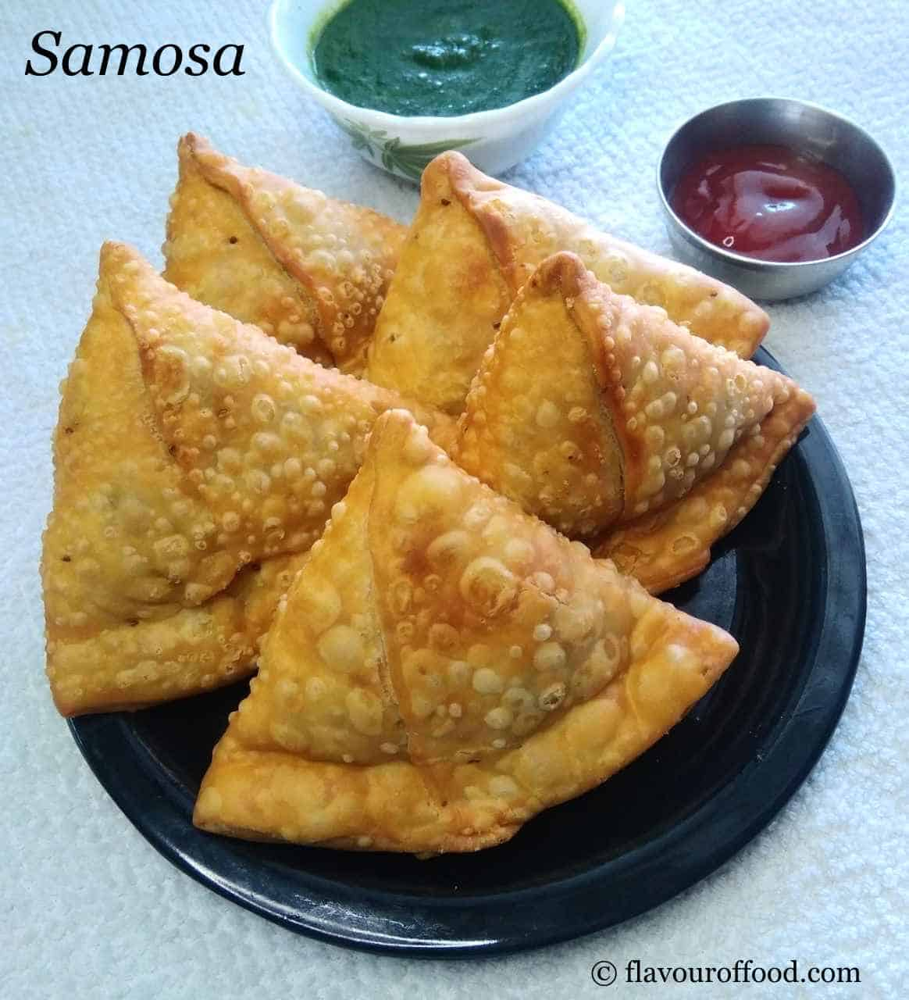
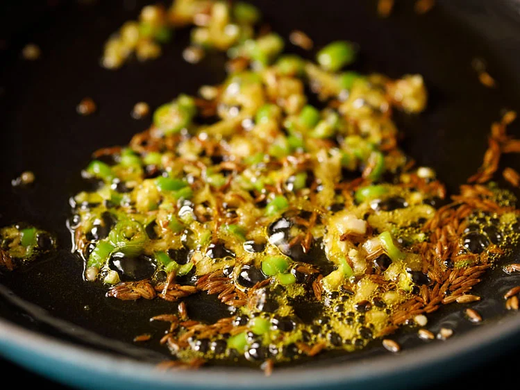
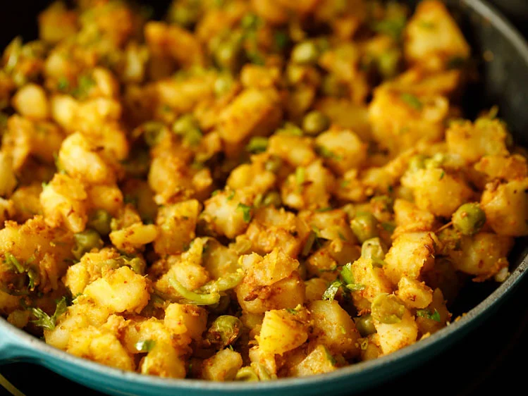
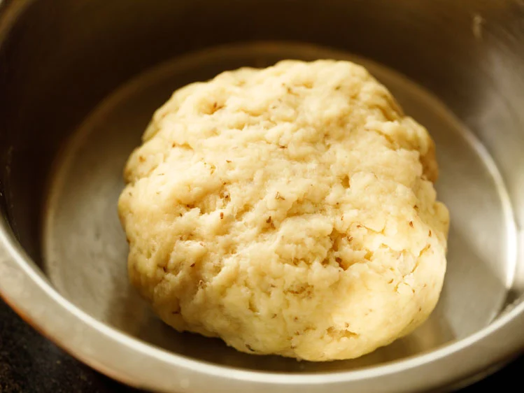
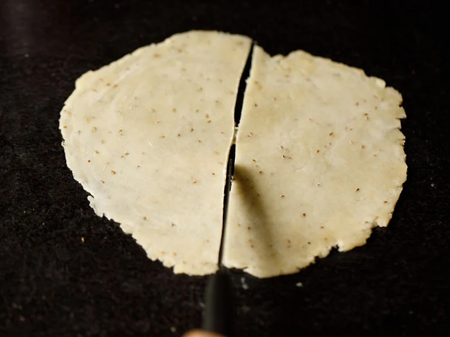
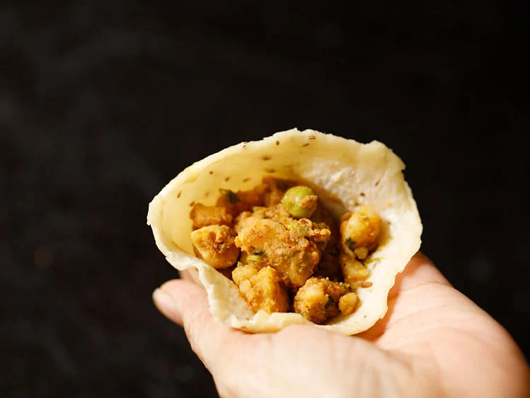

Samosa Receipe
Contents
- Receipe Ingrediants
- About Samosa
- How to make Samosa
Receipe Ingrediants
| Ingrediants Required | Quantity |
|---|---|
| Maida Flour | 1 kg |
| Potatoes | 1/2 kg |
| Carom Seeds | 3/4 Teaspoon |
| salt | 3/4 Teaspoon |
| Oil/Ghee | 2 Tablespoon |
| Spices | As Per Required |
| Water | As Per Required |
About Samosa
Samosa is a deep fried pastry with a spiced filling usually made with potatoes,spices and herbs.Samosa is one of the most commonly eaten snack across india.They are hugely popular and are loved by every one.

How to make Samosa
- Salute cumin seeds for potato filling
- Add spices and boiled potatoes and cook for a while
- Prepare the dough for the Samosa
- Roll the dough in small puris and cut into half
- Fill the semi-circle with potato filling and deep fry
Salute cumin seeds for potato filling
To make delicious samosas at home, first, make the filling. Put a pan on medium flame and add 2 tsp oil in it. Once the oil is hot enough, add cumin seeds and allow them to crackle.

Add spices and boiled potatoes and cook for a while
Now, add whole coriander seeds, ginger and green chilli. Saute for a minute and then add chopped cashews and raisins,peanuts if you like them, boiled and mashed potatoes, cumin powder, coriander powder, garam masala powder, red chilli powder, salt to taste, kasoori methi leaves, coriander leaves. Mix well and saute for 2 minutes. Your stuffing is ready!

Prepare the dough for the Samosa
Now, to prepare the dough, take a mixing bowl and combine all-purpose flour along with carom seeds and salt. Mix and then add ghee and start kneading by adding a little water at a time. Ensure that you add water gradually and
make a firm dough. A soft dough will not make your samosas crispy. Cover the dough with a damp muslin cloth and keep aside
for about half an hour.

Roll the dough in small puris and cut into half
Once done, roll out few small-sized balls from the dough. Flatten them further with the help of your palms and then with a rolling pin. Give them a round shape and cut in half. Now dip your hands in water, fold the edges of the semi-circle in order to give it a cone shape.

Fill the semi-circle with potato filling and deep fry
Take the filling with the help of a spoon and stuff it in the cone. Seal the ends properly by pressing the edges lightly with your fingers. Then, heat oil in a pan and deep fry the samosas on low heat until they turn golden brown and crispy. Serve with tomato ketchup and green chutney. Enjoy it as a tea-time snack!
